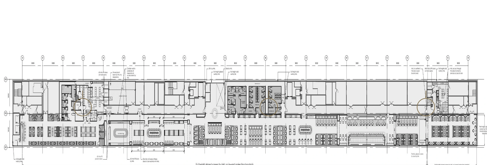
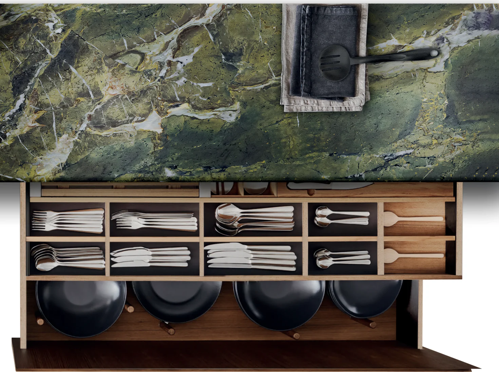

Kitchens
Bespoke cabinetry, islands and material palettes shaped around your rituals.

London · Dubai · Bespoke interiors
Kitchens and joinery made around the way you live, with a quiet confidence that lasts.
Begin a conversation ↗Design-led · Made to last · London & Dubai
We design spaces that feel inevitable: considered from the first line, resolved down to the last hinge.
Our work sits between architecture and everyday life. It is tactile, practical and quietly expressive.
How we work ↘From a single kitchen to a whole home, we bring the same care to every surface, junction and moment.

Good work takes conversation, care and clear process.
Request a consultation ↘We begin by understanding how you live, what matters to you and what space needs to achieve.
We refine layout, materials, details and practical decisions into clear design direction.
We manufacture, coordinate and install the project with close attention to detail.
A Nura project is designed to make important decisions feel easier—not more complicated.
We turn ideas, references and practical needs into a shared point of view.
We explain the choices, trade-offs and care behind every finish.
The result is made for your routines, your architecture and the years ahead.
There is no Nura look. There is only the right response to your home.
 Warm & tactile
Warm & tactile
Quiet & architecturalLight & consideredWe work across London and Dubai, bringing an attentive, design-led process to homes with a point of view.
We collaborate with architects, interior designers and developers to make the joinery feel native to the project.
Talk to our studio ↗A few practical answers before you tell us about your project.
We design bespoke kitchens, joinery and complete-home interiors for private clients, architects and designers in London and Dubai.
Yes. We regularly collaborate with design teams, developing the joinery and details alongside the wider architecture.
We review your brief and reply with a considered next step. If the project is a fit, we arrange an initial conversation about scope, timing and direction.
Our studios are based in London and Dubai. For projects elsewhere, tell us about the location and we will let you know what is possible.
Tell us about your home, your location and what matters to you. We’ll reply with a considered next step.